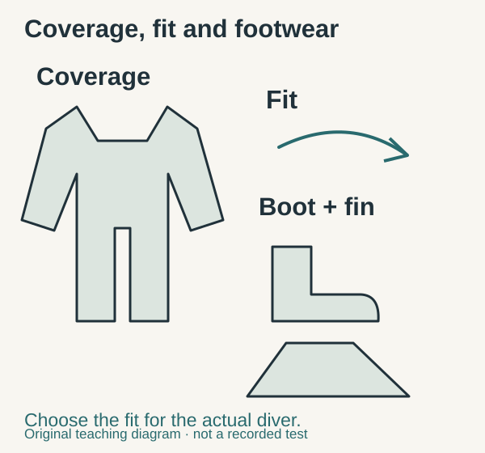
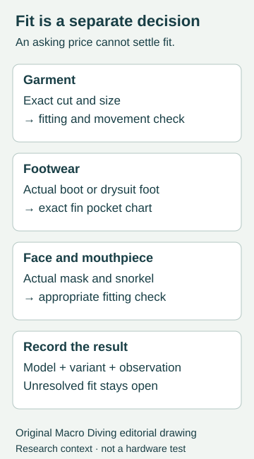

Separate coverage from fit
Exposure wear is the clothing and related pieces chosen for the diver and intended conditions. The suit, its fit and the footwear-to-fin fit need separate attention.


Identify coverage, movement and the exact boot-and-fin combination.
Original concept diagram · Macro Diving. Illustrative parts and relationships; not a recorded equipment test.
Read the diagram description
A generic suit outline, a movement arrow, and a boot beside a fin represent three different checks: body coverage, usable fit and the exact footwear-to-fin combination. No temperature, size or exposure-protection rating is shown.
What changes. A thickness or starting price does not choose a safe temperature, duration or size for a particular diver.
When it helps. Use the dated shortlist below to prepare a fitting conversation, not as a temperature or size prescription.
Try it. List the pieces you would need to try together, including any hood, gloves, boots or fins. Keep the suitability decision with the appropriate qualified professional.
Exposure wear is a system that must fit the diver and the intended conditions. A thickness label and a price tier cannot establish a safe water temperature, depth or duration. This guide organizes the 13 researched candidates into useful fitting conversations. It does not choose a suit size or prescribe an exposure system for a particular dive.

Compare coverage before comparing price
The October 28 research includes Cressi Lido Long 2mm at $99.95, Morea 3mm at $154.95 and SCUBAPRO Sport Shorty 2mm at $129. These are different cuts and coverage. The shorty leaves limbs uncovered by that garment. A lower price for a different coverage pattern is not a tested warmth comparison.
SCUBAPRO Sport Steamer 5mm was $359, while BARE Reactive 7mm was $684.95. Do not convert those names into a universal ladder from beginner to advanced or assume one is suitable whenever the other feels cold. The Sport page describes its foam as less compression-resistant than Dive Foam and contains an N/A thickness field despite the named 5mm model. Retain the discrepancy in the source record rather than silently correcting the manufacturer data.
Separate sun coverage, insulation and accessories
The SCUBAPRO UPF 50 T-Flex long-sleeve candidate was $99. UPF is not a thermal rating. Its manufacturer loose-fit naming conflicts with a fitted description in a same-code retail source; verify the physical cut and exact label before choosing a size.
Hoods, gloves and boots need their own fitting checks. The recorded Everflex 3/2 hood was $79, 6/4 bibbed hood $89 and 5mm glove $69. Delta Short 3mm boots were $59 at family-price scope; Heavy-Duty 6.5mm boots were $119. Those observations do not identify a complete set that fits one person. The bibbed hood’s panel descriptions also differ within its page, so do not normalize them into a newly verified construction.
Make the boot and fin decision together
A boot must fit both the actual foot and the intended fin pocket. A shoe-size label alone does not establish that a thick sole, heel or drysuit footwear will enter a particular pocket. Bring the exact footwear to the fitting and use the fin maker’s model-specific chart. There is no universal “buy one size larger” rule in this research.
As an arithmetic example, a $59 Delta Short family offer plus the $179 GO Sport fin offer makes $238 in recorded October 28 asking prices. It is not a tested pairing or a selected-size quote. Do not present the sum as a kit until both exact variants and their fit have been checked.
Treat a drysuit starting price as a starting price
DUI FLX Extreme was listed from $3,630; that starting figure does not identify the selected seals, footwear, accessories or insulation configuration. No US price is qualified here for Argonaut 3.0. Request a quote for the exact configuration rather than estimating a comparable finished-system cost.
The Argonaut manufacturer’s exhaust-placement warning for limited arm or shoulder mobility is a reason to review the actual configuration with a qualified fitter. Drysuit training, insulation selection, mobility and the rest of the exposure system are separate dependencies. This guide does not turn a shell quote into a cold-water package.
Leave the fitting with a precise list
Record the exact cut, size, model code and any unresolved alterations or accessories. Verify movement, closures and how the garment works with the rest of the chosen equipment through the appropriate fitting process. Keep manufacturer care instructions with that particular garment; an adhesive or lubricant sold elsewhere in the catalog is not automatic repair approval.
The evidence slice is SCUBAPRO-heavy and the verified suit cuts are model-specific, largely men’s cuts. It is not a comprehensive market survey or a complete inclusive sizing guide. If those cuts do not suit the diver, expand the exact-model research rather than forcing a choice from the available price rows.
Price observations are dated research, not a delivered quote. Availability, exact variants and any unresolved connections need checking before purchase. These comparisons have not been tested as assembled equipment.
Sources
- Sport Steamer 5mm exact item · SCUBAPRO
October 28, 2026 model and foam evidence; no October 29 price update is established here.
- FLX Extreme · DUI
Retained starting-price/configuration scope, not a finished drysuit system.
- Argonaut 3.0 · Fourth Element
Retained mobility and configuration caveat; no US price qualified.